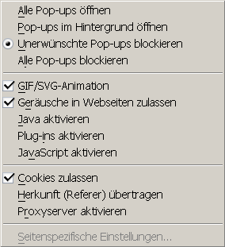
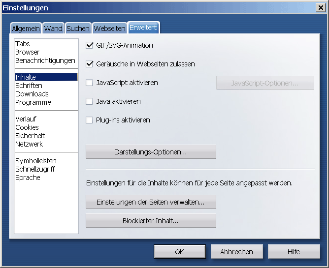

Proxyeinstellungen
Inhalt
Proxyeinstellungen
Inhalt  Browservorbereitung andere Browser
JonDo-Oberfläche
Browservorbereitung andere Browser
JonDo-Oberfläche
Proxyeinstellungen
Inhalt Browservorbereitung andere Browser
JonDo-Oberfläche
Opera bietet Schnelleinstellungen, die unter anderem das Blockieren von aktiven Inhalten zulassen. Die Einstellungen sind über das Menü Extras -> Schnelleinstellungen und über die Taste F8 erreichbar. Es wird empfohlen, Java, JavaScript, Plugins und den Referer zu deaktivieren.

Die Einstellungen können auch im Menü gesetzt werden: Extras -> Einstellungen. Wählen Sie den Tab Erweitert und dort Inhalte.

Deaktivieren Sie Java, JavaScript und Plugins.
Um den Referer auszuschalten, wählen Sie Netzwerk statt Inhalte und haken dort Herkunft (Referer) übertragen ab.
Bitte beachten Sie:
Das sind lediglich grundlegende Einstellungen. Sie beinhalten keine Anpassungen von HTTP-Headern. Verwenden Sie deshalb JonDoFox, um das Senden sämtlicher digitaler Spuren und die Ausführung von schadhaften aktiven Inhalten zu vermeiden.
Test:
Welche digitalen Spuren Sie noch hinterlassen, können Sie mit dem JonDos-Anonymitätstest überprüfen.
Proxyeinstellungen
Inhalt Browservorbereitung andere Browser
JonDo-Oberfläche